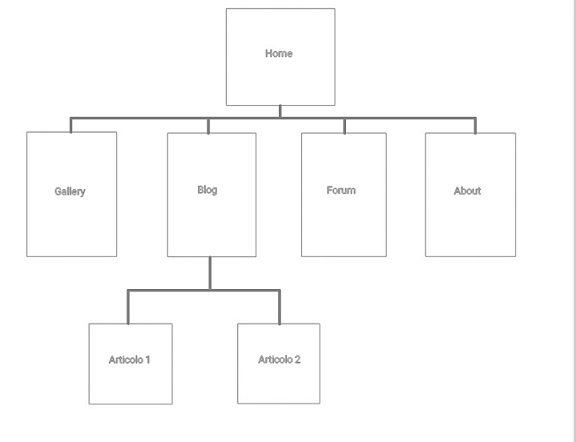

About Sede Wireless 2.0
Sede wireless 2.0 vuole essere quel collegamento tra individui che vivono le stesse emozioni e situazioni da città diverse.
I sentimenti non hanno età, come il pubblico che vuole chiamare; non solo universitari, ma anche donne e uomini che sono fuori sede per lavoro.
Nasce dal bisogno di ogni fuori sede di risentirsi a casa, solo per un po', senza pretese.
Una rete sociale che non rimane solo un portale, ma permette di incontrare compaesani che magari non si sapeva essere dietro l'angolo.
Project Management Plann
Banchmarketing
1.Obiettivi:
- far sentire a casa
- mettere in contatto i singoli
- esprimere pensieri su argomenti d'interessare per il target;
- fare conoscere angoli del nostro Paese che solo chi è del posto sa
2.Target Utente:
Chiunque si trovi lontano dal proprio paese natale per motivi di studio o lavoro
3.Competitors:
-Studentifuori.it: blog con diversi articoli riguardanti ricette, luoghi da frequentare e trucchi per agevolare la vita dei fuori sede di diverse città; vuole fornire "un manuale di sopravvivenza".
-Fuorisede.info: portale di ricerca che, a seconda della città inserita, fornisce diversi links di associazioni ecclesiastiche, allogi e rimanda alle offerte formative del luogo.
-Casasurace.com: portale che fornisce video tratti da esperienze di vita comuni dei fuori sede dal sud
Struttura e Layout
Architettura del sito
Wiraframe
Home & About

Look and Feel
Colori:
-Sfondo: bianco sporco(#F8F8F8)
-Menù, Icone e Bottoni: giallo aranciato(#fdc41c)
-Testo: blu scuro (#00264d)
-Grassetti: verde(#339933)
Font:
Immagini: scelte per sottolineare le diverse sfaccettature di "casa": cibo, luoghi cari e belli e strade comuni.
Linguaggi e strumenti
-html5, css3, template creato da zero.
-Padlet.com: forum
-Canva e Logomaker: logo
-Mockups: architettura sito e wireframe
-Google fonts: fonts
-Font Awesome: icone
-W3school: colori
-Github: pubblicazione
-Google Analytics: statistiche e dati d'utilizzo
Comunication strategy
1.Background
-Studentifuori.it:
PRO: la suddivisione per città, i tanti articoli su diversi temi, la presenza sui social.
CONTRO: non favorisce la conscenza tra i vari lettori del sito.
-Fuorisede.info:
PRO: Fornisce informazioni utili;
CONTRO: Non fornisce contenuti che invoglino il lettore a sostare sulla piattaforma e le presenti sono riscontrabili già su portali di informazione più conosciuti.
-Casasurace.com:
PRO: ampia presenza sui social, stile comunicativo leggero, diffusione di prodotti propri.
CONTRO: i loro contenuti sono per lo più video o post memistici.
Alla luce dello studio dei competitors ho aggiunto alla mia idea originale il blog.
2.Obiettivi comunicativi
L'idea è di far sentire tutti i fuori sede, con le loro vicissitudini e nostalgie, capiti e vicini l'uno con l'altro.
I colori scelti richiamano il paesaggio meridionale, usando il blu del mare, il giallo/aranciato del sole e il verde della natura. La scelta del font voleva richiamare la rotondità e morbidezza legata all'idea di relax e sud.
L'obiettivo è creare una community, che può:
-fare conoscere la propria terra nella gallery, inviandole sul forum;
-confrontare il proprio punto di vista con quello espresso sul blog;
-dialogare nel forum, dove quanti sono al nord per commercializzare i prodotti del sud possono ampliare il loro mercato.
3.Target audience e messaggio
Il sito è dunque aperto a chiunque si trovi ad essere fuori sede per diversi motivi:
a) gli universirtari
b) chi si trova ad essere fuori sede per lavoro.
Le foto di posti familiari, i colori caldi e gli articoli sul blog vogliono attirare il loro interesse.
Il messaggio che voglio mandare sta nel titolo "Sede Wireless 2.0":
una casa che non si tocca, ma si percepisce e funziona nel sempre più avanzato mondo digitale "2.0";
imperfetta ma semplice e calorosa, dove chiunque può dire di "uscire il cane" e "scendere la pasta".
4.Promozione
Per far arrivare questo portale al target ho scelto i social, in particolare Instagram, con la creazione di stories e post per promuovere Sede Wireless 2.0.
Valutazione dei risultati
Gli obiettivi posti sono stati raggiunti, come si vede dalle interazioni sul forum, i like su instagram e dal numero di visite al sito, visibili grazie a Google Analytics